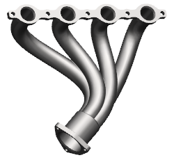
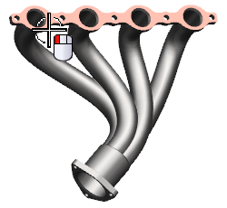

打开 wav3_header。

右击装配导航器背景，确保已选中 WAVE 模式。
在装配导航器中，右击 wav3_header 并选择 WAVE→将几何体复制到新部件。
在创建一个与位置无关的链接特征信息框中，点击确定。
与位置无关的链接特征或者称为 PILO(Position Independent Linked Object)是具有下列特性的链接几何体：
当重新定位父项几何体时不受影响
可以根据设计需要将它以任意方位放置到任意位置
在新建部件对话框的新文件名输入框中，键入 gasket 并回车。
在部件间复制对话框的过滤器列表中，选择面。
选择如图所示的面，然后点击确定。
